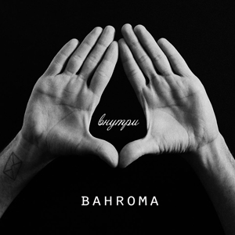

00:00
00:00
текст
/
очередь
Извини, что все так вышло
Я хотел как можно тише
Уходить, не возвращаться
Забывать и забываться
И кому какое дело
У кого какого цвета
Души были все наружу
Оставалось только слушать
Ветер, листья, камни, море
Забираю все с собою
Оставляю только память
Память не стереть, не сгладить
Так мало мне рая
Хочу что бы хватала
Как мало мне рая
Хочу что бы хватала
Без меня скучаешь где то ты
Прости меня за это
Без меня проходят лето и зима
Без тебя моя планета
И глаза другого цвета
Без тебя мои проходят дни
Без тебя
Ну допустим, предположим
Мы с тобою так похожи
И невидимою нитью связанны наши ладони
Черно белое на память
Что, зачем хочу исправить?
И запутанные фразы
Сердце трогают словами
Разводи теперь руками
Слишком поздно
Знаешь
Сами оставляем только память
Память не стереть, не сгладить
Так мало мне рая
Хочу что бы хватала
Так мало мне рая
Хочу что бы хватала
Без меня скучаешь где то ты
Прости меня за это
Без меня проходят лето и зима
Без тебя моя планета
И глаза другого цвета
Без тебя мои проходят дни
Без тебя
Мне бы хотелось
Шли они
Один на один с пустотой
Новогодняя